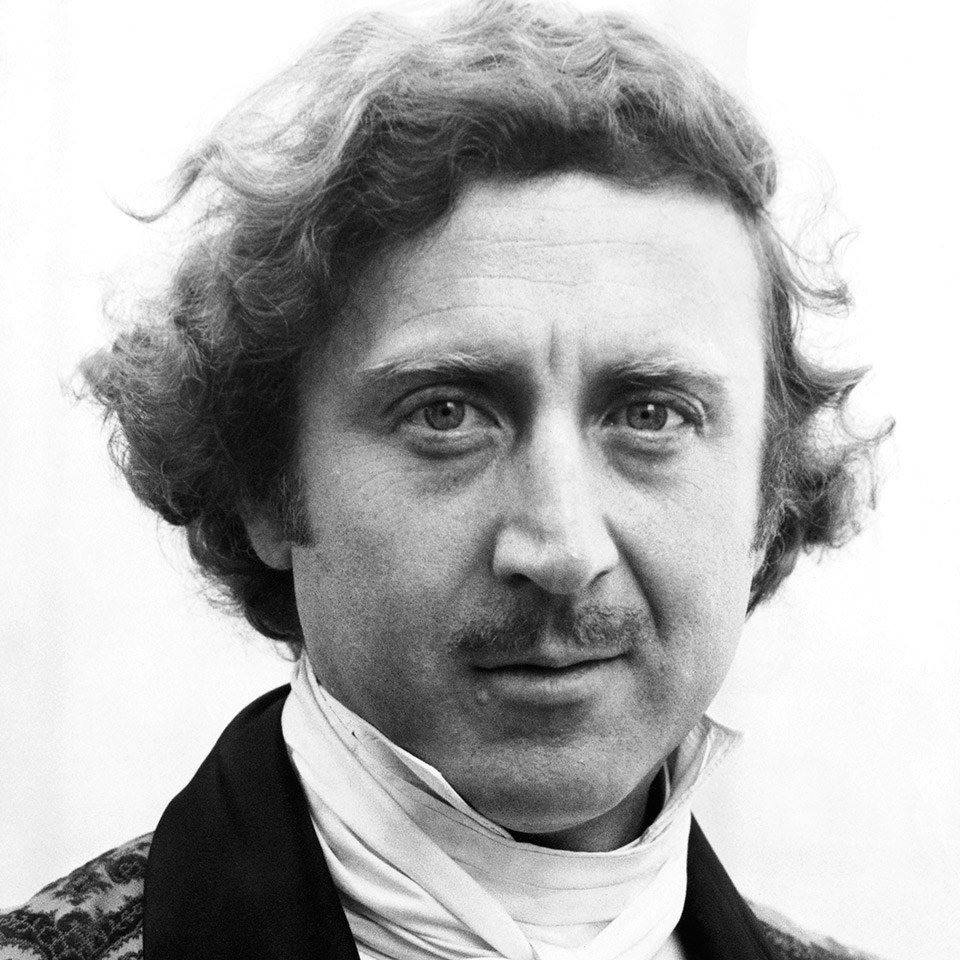
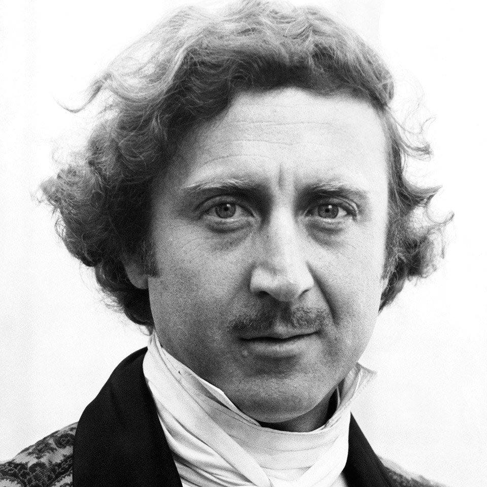
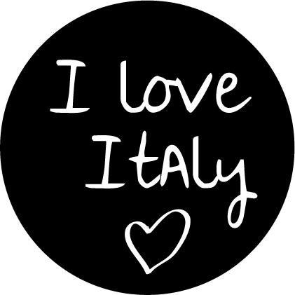
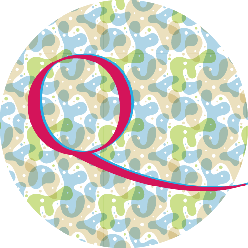
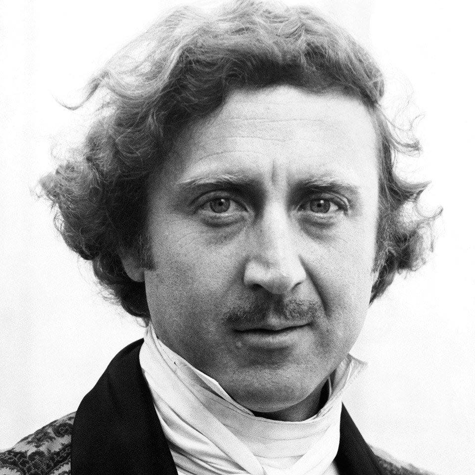
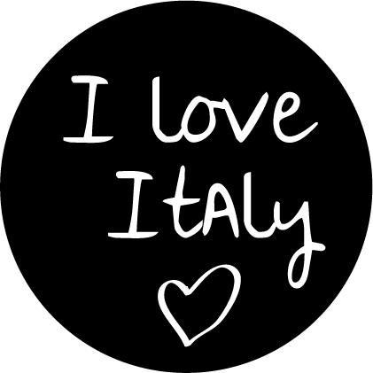
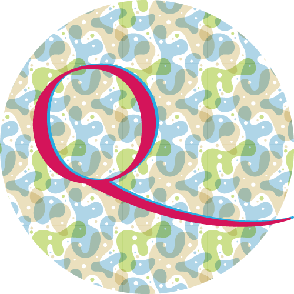

Majo adv
Strategie di comunicazione. Soluzioni performanti e misurabili.
SEO VIDEO SOCIAL WEB


 

Puoi trovarci anche qui

Strategie di comunicazione. Soluzioni performanti e misurabili.
SEO VIDEO SOCIAL WEB

Puoi trovarci anche qui
